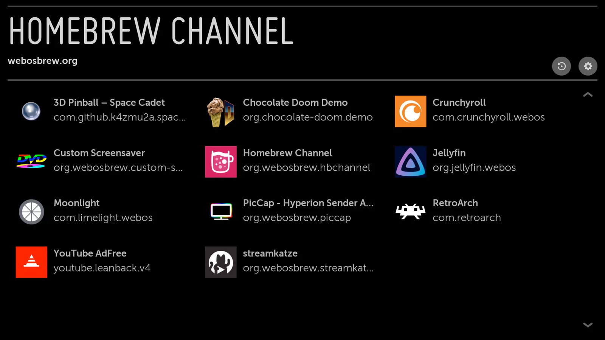

← Back to all routesTV interface screenshot supplied by the webOS Homebrew Channel project; no separate image license was stated. View image source ↗
webOS Homebrew Channel
- Provide community app installation and management on an owner's webOS TV.
- 3/5 dimensions have verifiable sources
- Uses source-backed feasibility, docs/community, and practical-value dimensions; unpriced cost and incompletely assessed bricking/security risk remain null.

What it can become
- App extension
- Hardware scope LG webOS TVs meeting root prerequisites.
- Category TVs & TV boxes
- AI relationship Traditional reuse infrastructure
- Route type Platform / multi-device project
- Sources last checked 2026-10-20
Before you start
- Method Install apps and extend privileges
- Difficulty Advanced
- Disassembly Not required
- Soldering Not required
- Cloud API / service Optional
- Cost Not priced / UNKNOWN
- Stop condition Depends on privilege access/development environments available for the exact firmware. This does not repair physical TV faults.
- Firmware Unknown
- Region Unknown
- Possible cost Check whether the existing device, power supply, storage and connection accessories are sufficient for the exact model.
Risk and recovery
- Data-loss risk Possible
- Bricking / boot-failure risk Possible
- Recovery route The README describes a failsafe emergency shell. It cannot be assumed to recover every boot failure.
- Recovery guide ↗ (no verified link)
Evidence, maintenance, and sources
- E1 · Source code & deployment docs The README lists installation, root functions and a failsafe mechanism and identifies this as an unofficial community store.
- Hands-on status KitAgain has not tested this device hands-on.
- Maintenance Repository not archived
- Last GitHub push 2026-08-03T11:05:15Z
- Repository license MIT
- A recent push does not prove model compatibility, and a root license does not automatically cover firmware, models, brands, or third-party components.
- Upstream documentation ↗2026-10-20Use this to understand the outcome, how to start and the limits stated by the project.https://github.com/webosbrew/webos-homebrew-channel/blob/main/README.md
Project identity and verified author profiles
- webosbrew · GitHub ↗ — Source-repository owner account; this does not establish sole authorship